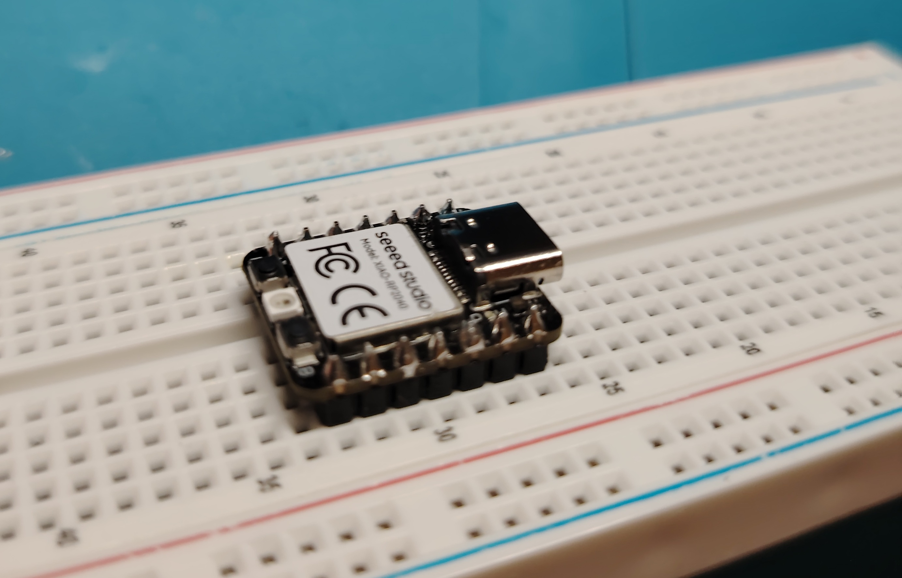
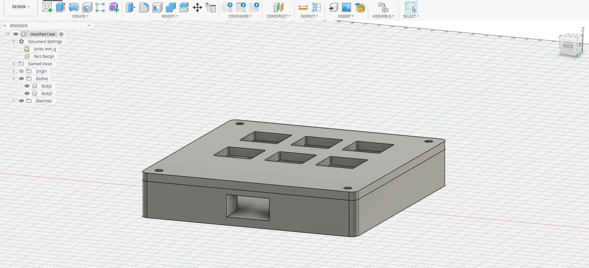
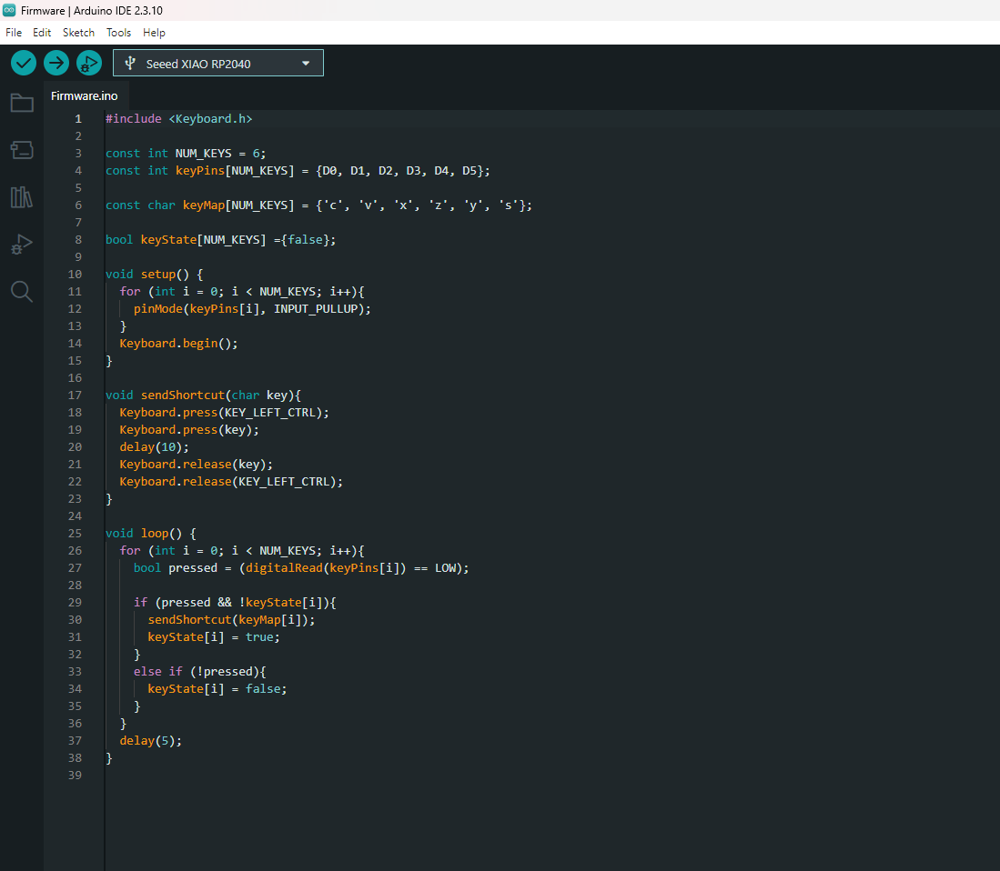
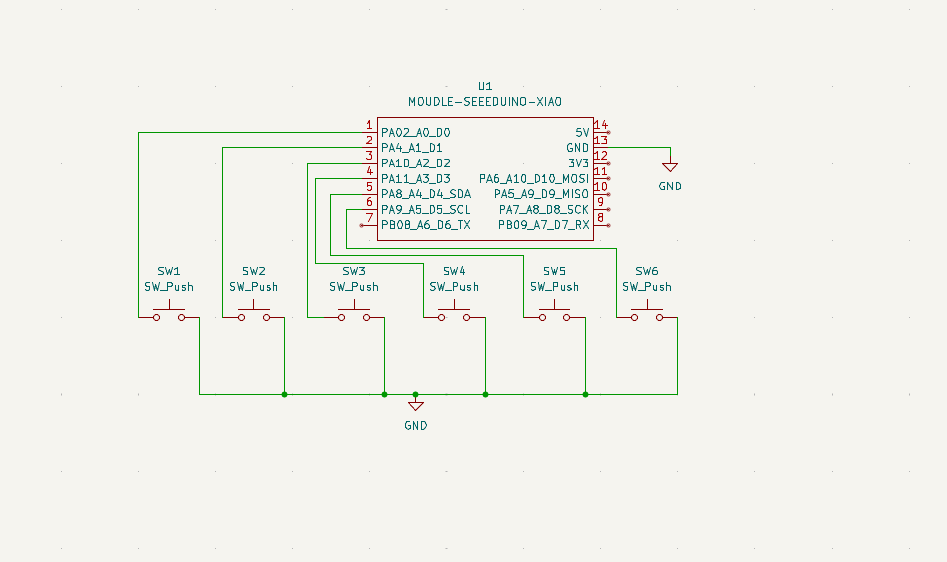
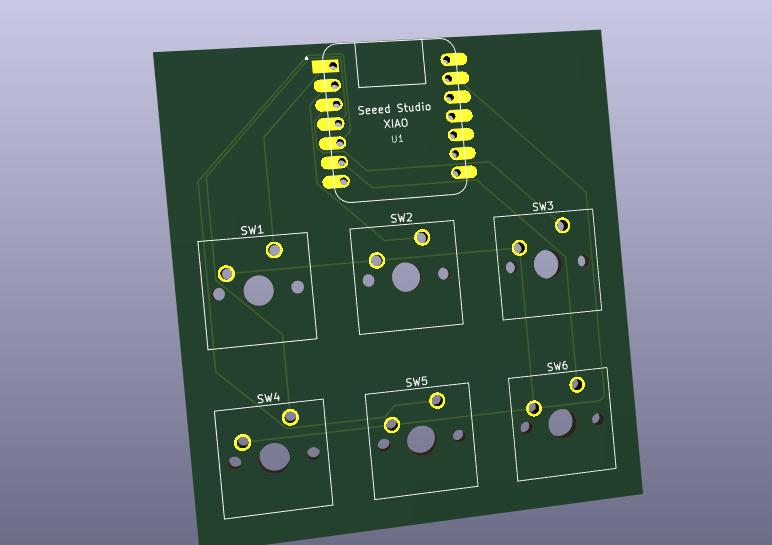
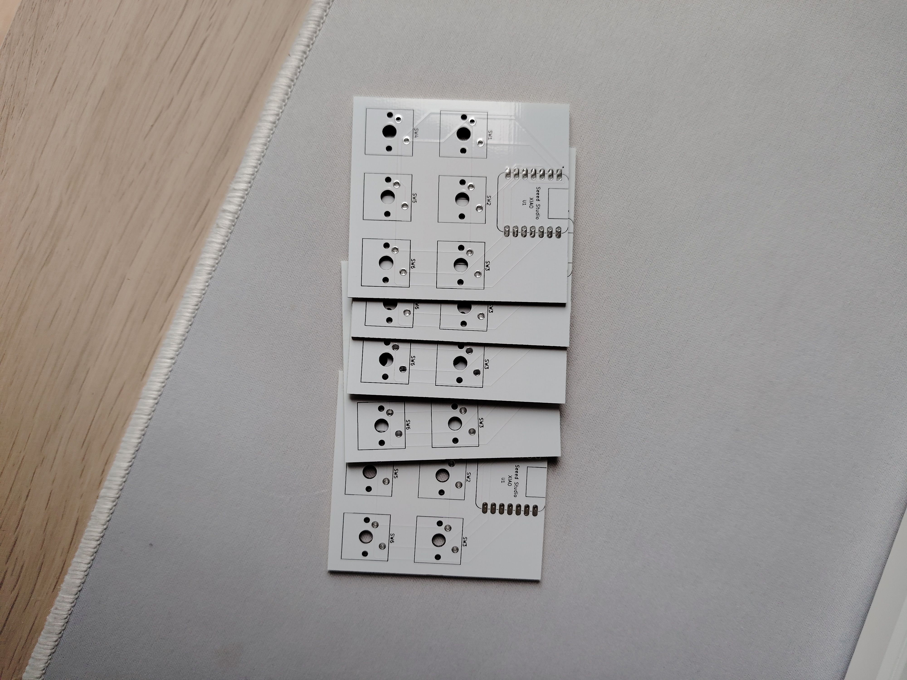
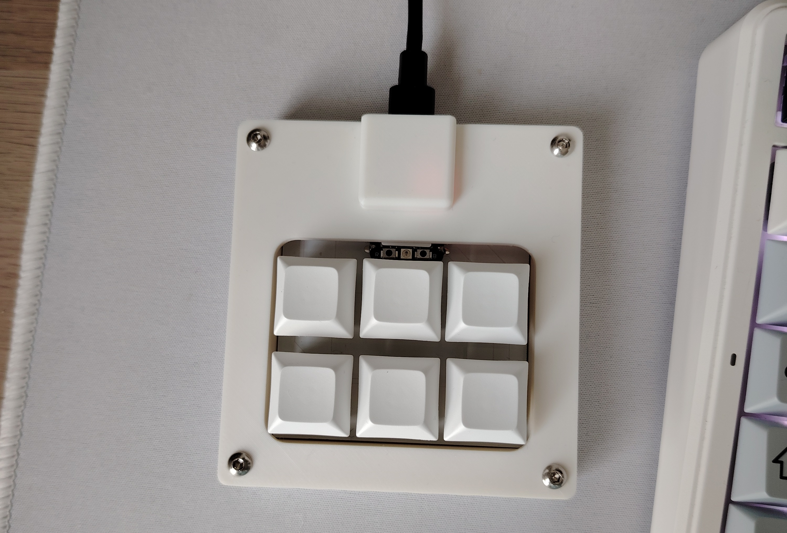

Gallery







A custom made Macropad with useful shortcuts for the keys, like copy or undo.

The Macropad is a custom macropad to help me with everyday repetitive keyboard shorcuts.
To make the MacroPad I needed to learn how to make a Schematic, PCB(Printed Circuit Board), and 3D Case, but the problem was I never done it before.
I used Fusion 360 for the 3D Printed case, Arduino IDE for the firmware, and Kicad to make the Schematic and the PCB.
After an eternity I finally got all the parts shipped to me to assemble the Macropad, first I soldered the header pins to the Xiao RP2040, after I uploaded the firmware and tested the circuit with a breadboard and it worked, then I put all the parts on the PCB and I soldered them on, when I finished that I tried to put in inside the case with the cover but it didn't fit so I had to remodel the case and 3D print a new one, so after all of that I now have a macropad which I use daily and It came out AMAZING!
When building the Hackpad I learned how to make a PCB, use Kicad, make a schematic, use Fusion360 to make the case and how to actually solder. These skills will help me in my future hardware projects so much!





